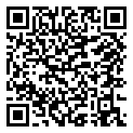

🟢 4ème · Période 5 · Quiz
Séquence 9 — Du besoin au prototype : concevoir et fabriquer un objet technique programmé
16 questions pour vérifier tes acquis, avec correction immédiate.
🔗 Lien direct vers cette page

49Q
Scanne le QR code, ou saisis ce code sur la page d'accès direct du site.
https://lyceefrancaisdetananarive.github.io/technologie/go.html?c=49Q